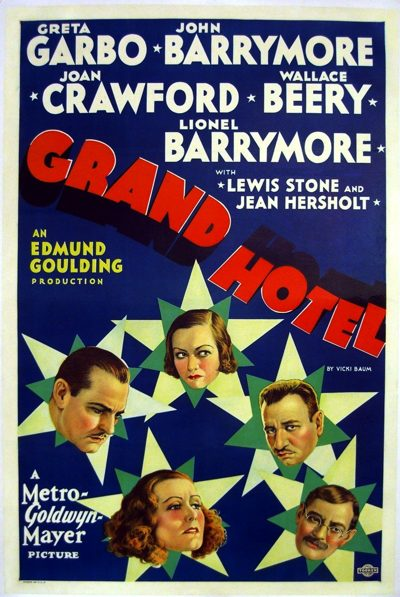

Grand Hotel

Starring: Greta Garbo, Joan Crawford, John Barrymore
Director: Edmund Goulding
Writer: Béla Balázs, William A. Drake, Vicki Baum
Producer: Irving Thalberg
Grand Hotel is a 1932 American drama film directed by Edmund Goulding and produced by Metro-Goldwyn-Mayer. The screenplay by William A. Drake is based on the 1930 play by Drake, who had adapted it from the 1929 novel Menschen im Hotel by Vicki Baum. MGM remade the pre-Code film as Week-End at the Waldorf in 1945.
Trivia
- Won the Academy Award for Best Picture.
- Based on Grand Hotel (1930 play).
- Based on Grand Hotel (1929 novel by Vicki Baum).
- Producer Irving Thalberg purchased the rights to Vicki Baum's novel Menschen im Hotel for $13,000 and then commissioned William A. Drake to adapt it for the stage.
- Pleased with its success, Thalberg had Drake and Béla Balázs write the screenplay, and had a budget at $700,000.
- The film was seen as an artistic achievement in its art direction and production design.
Previous Showings
6 Runs • 2 Festivals
Original Billings: 1 run (October 12, 1932)
Original Run: October 12, 1932 (Wednesday - Saturday)
All runs on record (6):
- October 12, 1932 (Wednesday - Saturday)Greta Garbo, John Barrymore, Joan Crawford, Wallace Beery, Lionel Barrymore
- April 13 - 15, 1990w/ Inspiration, The Temptress
- April 3 - 7, 1993w/ The King of Kings, Cavalcade
- July 14, 1994w/ Dinner at Eight
- September 14 - 16, 2005Summer 2005w/ Anna Karenina
- October 19 - 21, 2011Fall 2011w/ Anna Christie